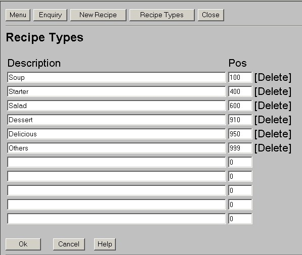

Login - Menu - Enquiry - SimpleDataList - DataPropertyPresentation - DataPropertyAdministration - DataTableAdministration
To see how the most frequently needed types of UIs for developing Servlet database applications are created, these samples are listed with the sreenshot, the individual source code and the API documentation of the used framework class.
Created by class de.jugs.cookbook.CookBookLogin
which extends de.must.markup.LoginDialog
Created by class de.jugs.cookbook.MainMenu
which extends de.must.markup.MustMenu
Created by class de.cookbook.CookbookEnquiry
which extends de.must.markup.Enquiry
Created by class de.jugs.cookbook.CookbookList
which extends de.must.markup.SimpleDataList
Created by class de.jugs.cookbook.CookbookPresentation
which extends de.must.markup.DataPropertyPresentation
Created by class de.jugs.cookbook.CookbookAdministration
which extends de.must.markup.DataPropertyAdministration

Created by class de.jugs.cookbook.TypeAdministration
which extends de.must.markup.DataTableAdministration